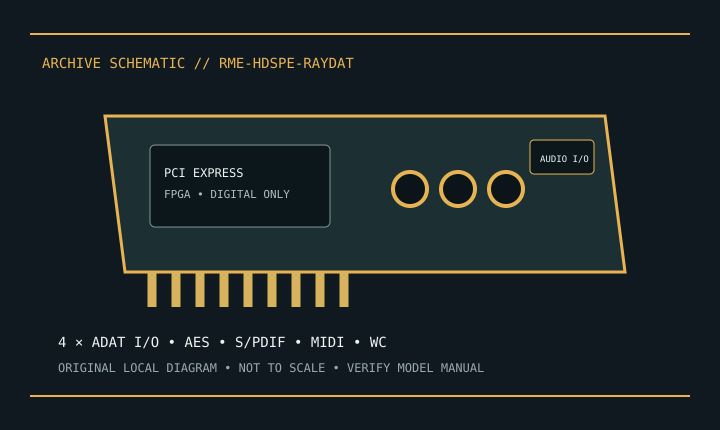

[ INDIVIDUAL MODEL // SOUND HARDWARE ]
RME HDSPe RayDAT
PCIe x1 digital-only card with ADAT, AES/EBU, S/PDIF and MIDI; analog conversion requires external hardware.

Model-specific specifications
| Exact model / identity | PCIe x1 digital-only card with ADAT, AES/EBU, S/PDIF and MIDI; analog conversion requires external hardware. |
|---|---|
| Audio processor / codec / DAC | No onboard analog codec, ADC or DAC: RayDAT transports digital audio and requires external converters for analog I/O; uses RME FPGA-based HDSPe platform. |
| Channels / resolution / sample rate | Up to 36 inputs and 36 outputs at base sample rates across digital I/O. ADAT S/MUX reduces channel count at higher rates; up to 24-bit/192 kHz. |
| Analog and digital ports | Four optical ADAT I/O pairs, coaxial S/PDIF I/O, AES/EBU breakout, MIDI and word-clock. Simultaneous totals depend on rate/routing. |
| Slot / host interface | PCI Express x1 add-in card. |
| Operating-system support | RME provides Windows and macOS drivers; check current driver/TotalMix compatibility for the host OS. |
Compatibility & preservation
Digital-only: analog gear requires external converters. High-rate ADAT S/MUX reduces channel count; follow RME clocking and format instructions.
- Photograph the card label, board revision, bracket connections and included accessories before service.
- Retain the exact driver, firmware and operating-system version known to work with this model.
- Confirm slot fit, connector pinout, breakout hardware, channel mode and supported sample rate before integration.
Manufacturer sources
- RME HDSPe RayDAT — official product informationManufacturer product, technical specification, or model manual source.
- RME HDSPe RayDAT — official user manual PDFManufacturer product, technical specification, or model manual source.